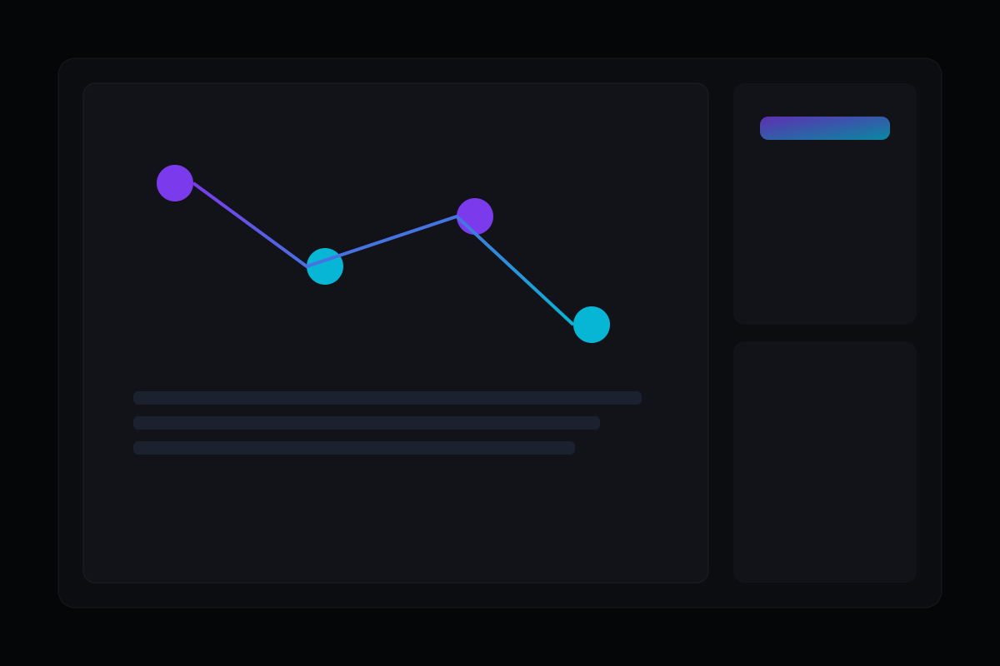

Quando aplicar
Quando há retrabalho, etapas repetitivas e dependência excessiva de tarefas manuais entre áreas.

Automação de Processos
Desenhamos e implementamos automações que conectam sistemas, padronizam rotinas e geram previsibilidade na operação.
Quando há retrabalho, etapas repetitivas e dependência excessiva de tarefas manuais entre áreas.
Menos esforço operacional, menos erro humano e maior velocidade de resposta para clientes internos e externos.
Receba um diagnóstico do que automatizar primeiro para gerar ganho rápido e sustentável.